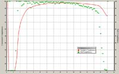
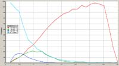

Analyse: Data Quality
Tabbed Initial
Completeness
An almost solid row of blue crosses at the top - good sign - high
completeness.
Missing Data: A few low angle reflections missing (probably behind the beam
stop)- Not usually important. If the blue crosses fall off at high angle, you can
click on the graph at the theta max at which you believe the data to be
more-or-less complete.
The inset shows data from a poorly diffracting
poly-peptide. The structure was difficult to solve, and refined to a
conventional R=8% with data down to 2 sigma.

{kind=link}
Sigma Frequency
There are very few reflections below -2 sigma - i.e. no badly negative reflections. From the blue line you can see that about 5400 out of the 7000 reflections have I/sigma(I) > 3. The listing file should give the exact figure. 77% of this data is reliably observable. If the figure falls below 50% you can expect problems with structure solution and refinement.

Sigma vs Resolution
The green curve shows that the very reliable data fades away at
[sin(theta)/lambda]2 of about 0.3. As normal, the weak data (red) is
mostly at high resolution. The yellow curve is the cumulative sum, and is scaled
to fit the chart (in this example by being multiplied by 10). It shows that the
mean I/sigma(I) is about 2 at 0.36 resolution. This is typical of an 'ordinary'
data set. Weakly diffracting crystals fall below the 2-sigma threshold at a lower
resolution.
The inset shows the data for the same poor crystal described above

Wilson Plot
This shows the usual ripple due to repeated molecular motifs. The gradient
gives an estimate of the overall adp, the intercept an estimate of the overall
scale of the data. Note the conventional use of B for the adp.
B=8.pi2U
Low values of MOD[E2-1] (< 0.74) may indicate
twinning.
If the high-rho end of the curve is ragged, or shows an up-turn (due to
systematic over-estimation of weak reflections), a maximum value of rho for the
rest of the analysis can be selected by right-clicking on the appropriate blue
cross. This value can be reset at any time in the REFINEMENT/FILTERING menu. The
LIST 28 check box enables you so see the effect of reflection filters.
 Same poor data as described above.
Same poor data as described above.
N(z) Distribution
This shows your data (as crosses) compared to thoretical distributions and may help you decide if you data is centrosymmetric or not. Generally not a very reliable test, especially if you have heavy atoms or repeated molecular motifs